Shahzad Aslam GitHub: saslam-stack (github.com)
AWS Certified Solution Architect Associate Email: saslam79@hotmail.co.uk AWS Certified Cloud Practitioner linkedin.com/in/shahzad-aslam-556719190 HTML, CSS and JavaScript web development
How to create users, groups and manage permission through AWS Identity and Access Management (IAM)
In many business environments, access involves a single login to a
computer or a network of computer systems that provides the user access to
all resources on the network. This access includes rights to personal and
shared folders on a network server, company intranets, printers, and other
network resources and devices. Unauthorized users can quickly exploit
these same resources if the access control and associated authentication
procedures are not set up properly.
AWS IAM (Identity and Access Management)
AWS IAM can be used for the following:
Manage users and their access.
Manage roles and their permissions.
Manage federated users and their permissions.
Manage users and their access:
You can create users and assign them
individual security credentials (access keys, passwords, and multi-factor
authentication devices). You can manage permissions to control which
operations a user can perform.
Manage roles and their permissions:
An IAM role is similar to a user
in that a role is an AWS identity with permission policies that determine
what the identity can and cannot do in Amazon Web Services (AWS). However,
instead of being uniquely associated with one person, a role is intended
to be assumable by anyone who needs it.
Manage federated users and their permissions:
You can activate identity
federation to allow existing users in your enterprise to access the AWS
Management Console, to call AWS application programming interfaces (APIs),
and to access resources without the need to create an IAM user for each
identity.
Create an account password policy.
In this task, you create a custom password policy for your AWS account.
This policy affects all the users associated with the account.
First, note the Region that you are in (for example, London eu-west-2).
The upper-right corner of the console page displays your Region. In the
AWS Management Console, in the search box, enter IAM and select it.
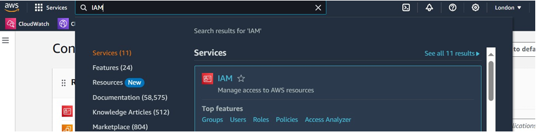
In the left navigation pane, choose Account settings. Here you can see the
default password policy that is currently in effect. The company that you
are working for has much stricter requirements, and you need to update
this policy.
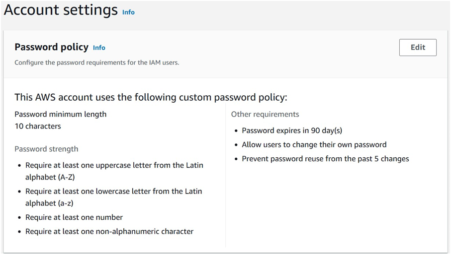
Choose Change password policy. Under Select your account password
policy requirements, configure the following options: For Enforce
minimum password length, change 9 to 10 characters. Select every
check box except the check box for Password expiration requires
administrator reset. For Enable password expiration, leave the
default option of 90 days. For Prevent password reuse, leave the
default option of 5 passwords. Choose Save changes.
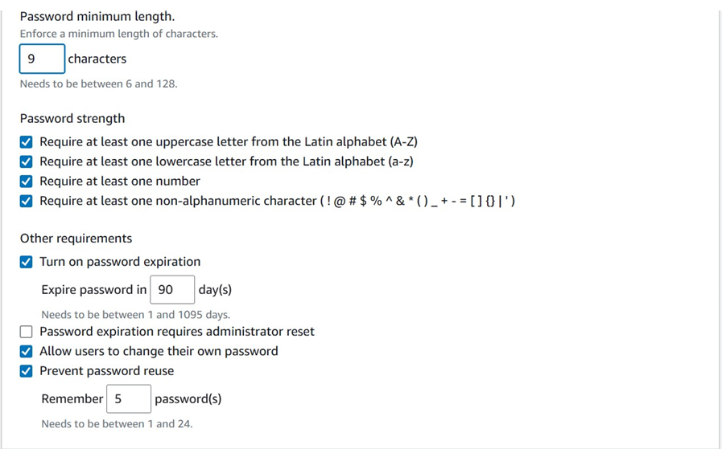
Explore users and user groups.
How to create a user:
In the left navigation pane of the AWS management console, select Users
and click on create user.
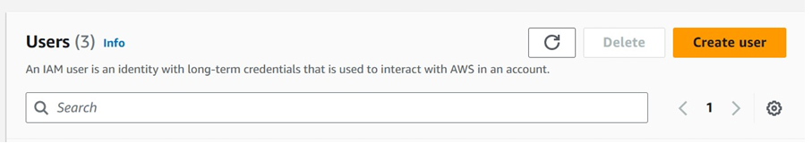
Give user a name, click on next to Provide user access to the AWS
Management Console – optional (only if access required). Click radio
button Autogenerated password and Users must create a new password at
next sign-in – Recommended and click next. In the Permissions options
choose one of radio button Add user to group, Copy permissions or Attach
policies directly and finally cick on Create user. I have created 3
users. In the left navigation pane, choose Users. The following IAM users
have been created for you: user-1, user-2, user-3
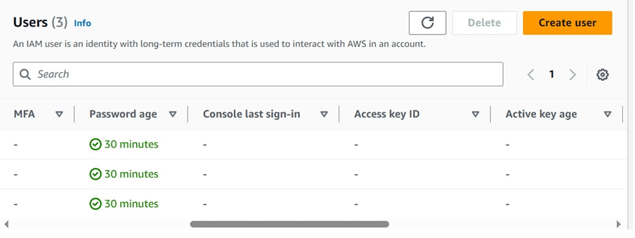
Choose user-1. his option bring you to a Summary page for user-1. The
Permissions tab is displayed. Notice that user-1 does not have any
permissions.
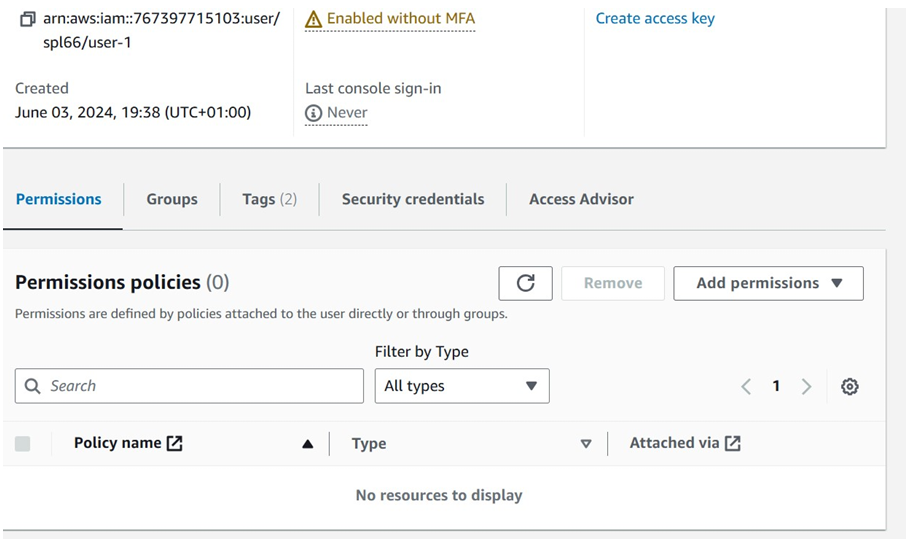
Choose the Groups tab. user-1 is also is not a member of any user groups.
A user group consists of several users who need access to the same data.
Privileges can be distributed to the entire group of users rather than to
each individual. This option is much more efficient when applying
permissions and provides greater overall control of access to resources
than applying permissions to individuals.
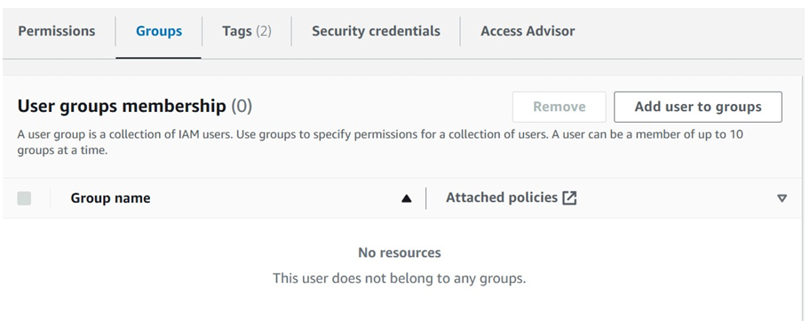
Choose the Security credentials tab. user-1 is assigned a Console
password.
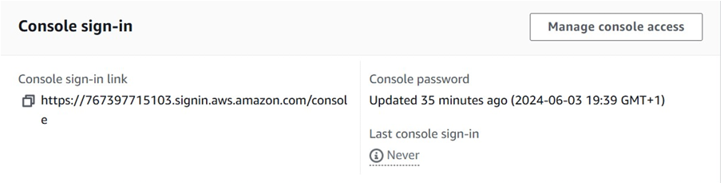
In the left navigation pane, choose User groups.The following user groups
have already been created for you: EC2-Admin, EC2-Support, S3-Support
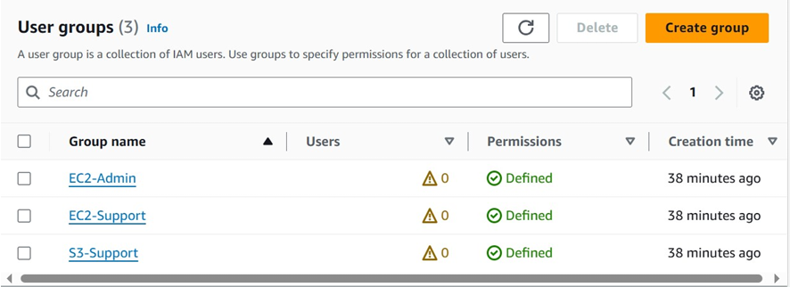
Choose the EC2-Support group. This option brings you to the Summary page
for the EC2-Support group. Choose the Permissions tab. This group has a
managed policy associated with it called AmazonEC2ReadOnlyAccess. Managed
policies are pre-built policies (built either by AWS or by your
administrators) that can be attached to IAM users and user groups. When
the policy is updated, the changes to the policy are immediately applied
to all users and user groups that are attached to the policy.
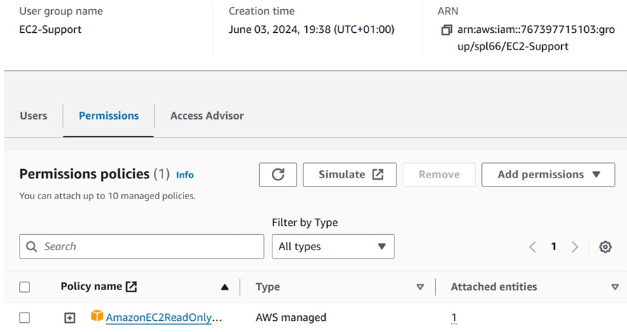
Next to the AmazonEC2ReadOnlyAccess policy, select the plus sign to show
the policy. A policy defines what actions are allowed or denied for
specific AWS resources. This policy grants permission to list and describe
information about Amazon Elastic Compute Cloud (EC2), Elastic Load
Balancing (ELB), Amazon CloudWatch, and Amazon EC2 Auto Scaling. This
ability to view resources but not modify them is ideal for assigning to a
support role.
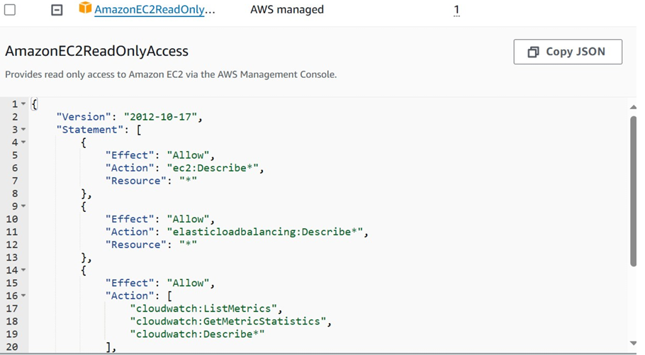
The following is the basic structure of the statements in an IAM
policy: Effect indicates whether to Allow or Deny the permissions.
Action specifies the API calls that can be made against an AWS
service (for example, cloudwatch:ListMetrics). Resource defines the
scope of entities covered by the policy rule (for example, a
specific Amazon Simple Storage Service [Amazon S3] bucket, EC2
instance, or * which means any resource).
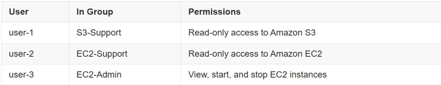
How to add user to user groups.
Add user-1 to the S3-Support group
In the left navigation pane, choose User groups. Choose the S3-Support
group. Choose the Users tab. In the Users tab, choose Add users.
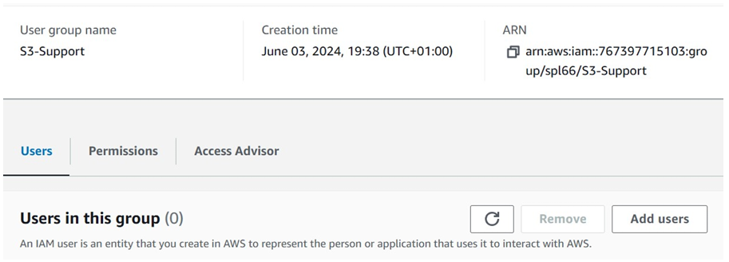
In the Add users to S3-Support window, configure the following options:
Select the check box for user-1. Choose Add Users. In the Users tab, you
see that user-1 has been added to the group.
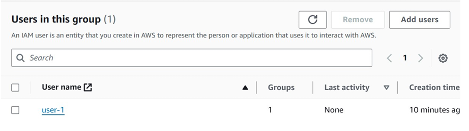
You can Add user-2 to the EC2-Support group and Add user-3 to the EC2
Admin group. Each group should have a 1 in the Users column for the number
of users in each group.
Sign in and test user permissions.
You test the permissions of each IAM user. In the left navigation pane of
IAM, choose Dashboard. The AWS Account section includes a Sign-in URL for
IAM users in this account. This link should look similar to the following: AWS management console sign in. You can use this link
to sign in to the AWS account that you are currently using.
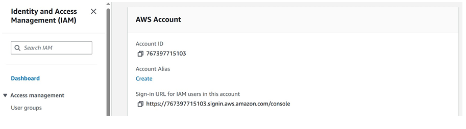
Copy the Sign-in URL for IAM users in this account to a text editor. Open
a private window (Search google how to open private window). Paste the
Sign-in URL for IAM users in this account into your private window, and
press Enter.
You now sign in as user-1, who has been hired as your Amazon S3 storage
support staff. Sign in using the following credentials: IAM user name:
Enter user-1, Password: Enter Lab-Password1 . Choose Sign in. If you see a
dialog prompting you to switch to the new console home, choose Switch to
the new Console Home.
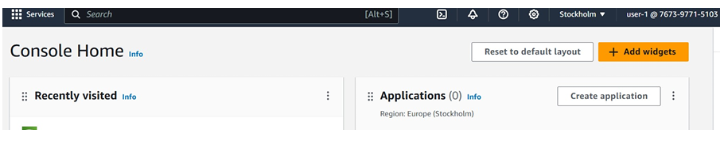
From the Services menu, choose S3. Choose the name of one of your buckets,
and browse the contents. Because your user is part of the S3-Support group
in IAM, they have permission to view a list of S3 buckets and their
contents.
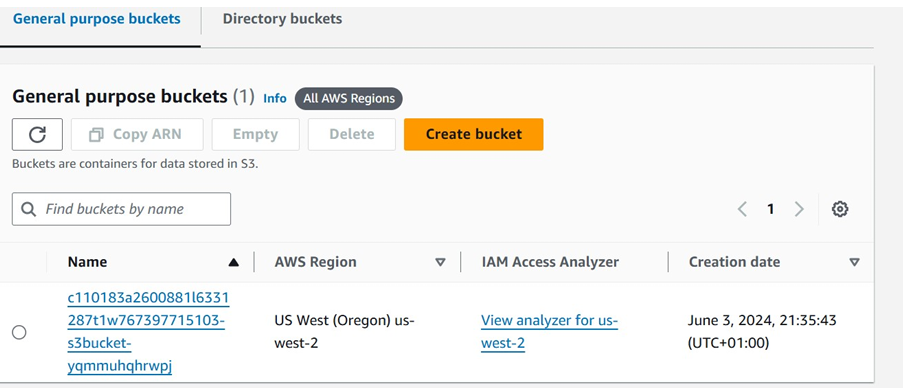
Now, test whether they have access to Amazon EC2.From the Services menu,
choose EC2. In the left navigation pane, choose Instances. You cannot see
any instances. Instead, you see a message that says, You are not
authorized to perform this operation. This message appears because your
user has not been assigned any permissions to use Amazon EC2.
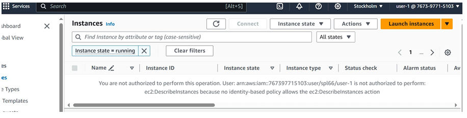
You can now sign in as user-2, and user 3 to check your access in the
same way you did with user 1. User-2 and user 3 have different access.